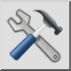

Preferințe de desenare…
Bară de instrumente / Pictogramă:


Meniu: Editare > Preferințe de desenare…
Scurtătură: Ctrl+I (Mac: ⌘I)
Comenzi: drawingpreferences
Bară de instrumente / Pictogramă:


Fereastra de dialog a preferințelor desenului vă permite să modificați preferințele care afectează diverse aspecte ale desenului curent. Aceste preferințe sunt stocate în desenul dumneavoastră.